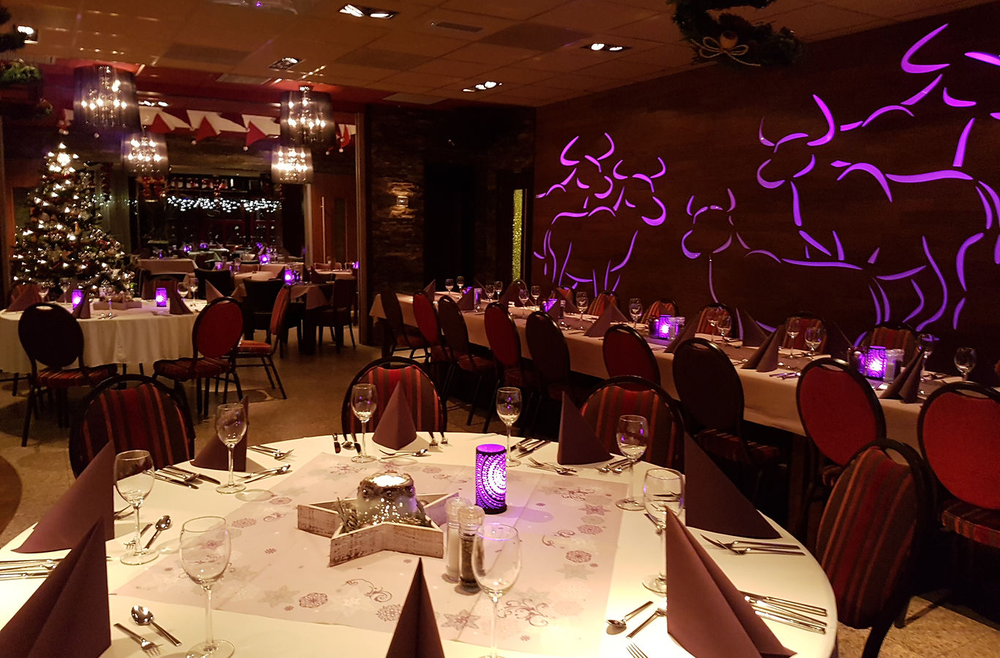
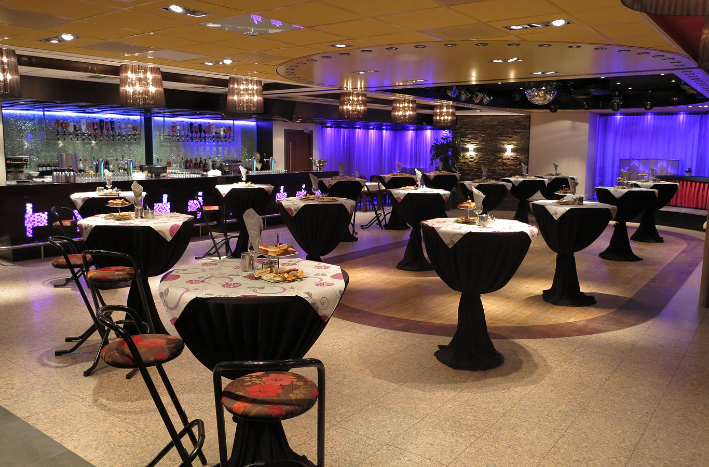

Diner
Keuze uit vele gerechten, een driegangenmenu of gezellig steengrillen.

Feesten & partijen, voor 10 tot 1000 personen
Laat het door d'n Os versieren! De Bonte Os verzorgt uw middag of feestavond geheel naar wens, in een van onze zalen.
Familiefeest, babyborrel, reünie, personeelsfeest, kampioen geworden, uw 18e of 90e verjaardag, Sarah of Abraham gezien, of al jaren getrouwd: wij zijn specialist in maatwerk. Met een welkomstdrankje, een lekkere kop koffie met luxe gebak, diverse hapjes de hele avond en/of een klein of groot buffet. Ook adviseren wij in de keuze van een goede dj, artiest of band.
Keuze uit vele gerechten, een driegangenmenu of gezellig steengrillen.
Verschillende zalen, compleet verzorgd met hapjes en drankjes. Zaal 3 heeft een dansvloer en discoverlichting.
Bijvoorbeeld Disco Fever of Viva Las Vegas. Of een quiznight of dinnershow met uw gezelschap.
Uw feest in onze moderne feestzaal, Partycentrum Proost, het grand café, het bruine café of de kelderdisco. Voor kleine en grote gezelschappen, van 10 tot 1000 personen.
10 - 250personen
Moderne en sfeervolle feestzalen in meerdere groottes, met podium, airco en ventilatie.
Zeer geschikt voor uw bruiloft, familiefeest, jubileum, verjaardag, babyborrel, reünie of personeelsfeest.
50 - 1000personen
Recent vernieuwde zaal "anno nu", ruim opgezet, met een hippe bar en een groot podium voor artiesten en optredens, plus geluid- en lichtshow.
Met een groter gezelschap zeer geschikt voor diner, bruiloft, presentatie, show of personeelsfeest.
tot 150personen
Gezellige ontmoetingsplek met restaurant en terras, zes dagen per week open.
Af te huren in overleg.
15 - 80personen
Ouderwets gezellige kroeg met een donkere, authentiek Nederlandse inrichting. Bruin staat ook voor gezelligheid en geborgenheid.
Voor een borrel of feest in kleinere kring.
20 - 120personen
Gezellige discodancing in de kelder van Proost, waar al vele jongeren op stap zijn gegaan. Met eigen bar, dj-booth en dansvloer met discoverlichting.
Voor een feestavond met dansen tot de laatste plaat.

Een indicatie van de mogelijkheden en vanafprijzen. Wij bieden ontzettend veel mogelijkheden en arrangementen; de actuele brochure sturen we u graag toe.
All-in: kies De Goedzak, De Gastvrije of De Gulle Gever. Ook speciale dranken als welkomstdrankje of om te toosten.
Ook mogelijk: Entertainment Bar, Gerstenat speciaalbierproeverij, Vino Fantastico wijnbar en Shakers cocktailbar.
All-in arrangement met koffie en gebak, drankjes, hapjes en/of buffet. We stellen het graag samen met u op.
In onze diverse zalen verzorgen wij uw bruiloft: bruidstaart, een heerlijk diner, receptie en een fantastische feestavond. Met familie en vrienden toosten op jullie huwelijk, met bruidstaart en bubbels.
De prijzen en alle mogelijkheden staan in onze brochure; die sturen we u op aanvraag toe. Wilt u de zalen eens komen bekijken of de mogelijkheden bespreken? Maak gerust een afspraak.
Ook op dinsdag, onze sluitingsdag, kunnen we een koffietafel, feest of partij verzorgen.